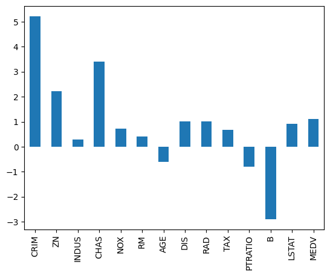
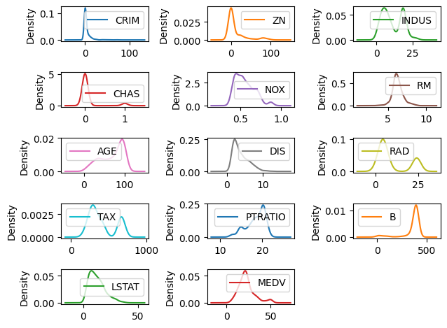
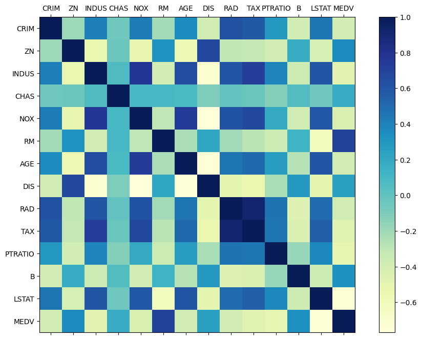
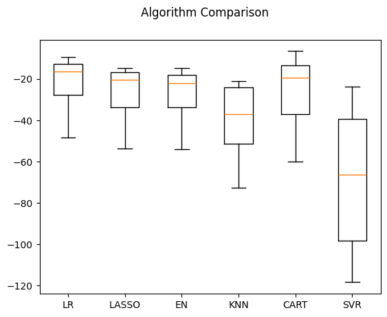

Boston House Prices#
Regression predictive modeling machine learning problem from end-to-end Python.
Tutorial from https://machinelearningmastery.com/machine-learning-with-python/
# 1. Prepare Problem
# a) Load libraries
import numpy
from numpy import arange
from matplotlib import pyplot
from pandas import read_csv
from pandas import set_option
from pandas.plotting import scatter_matrix
from sklearn.preprocessing import StandardScaler
from sklearn.model_selection import train_test_split
from sklearn.model_selection import KFold
from sklearn.model_selection import cross_val_score
from sklearn.model_selection import GridSearchCV
from sklearn.linear_model import LinearRegression
from sklearn.linear_model import Lasso
from sklearn.linear_model import ElasticNet
from sklearn.tree import DecisionTreeRegressor
from sklearn.neighbors import KNeighborsRegressor
from sklearn.svm import SVR
from sklearn.pipeline import Pipeline
from sklearn.ensemble import RandomForestRegressor
from sklearn.ensemble import GradientBoostingRegressor
from sklearn.ensemble import ExtraTreesRegressor
from sklearn.ensemble import AdaBoostRegressor
from sklearn.metrics import mean_squared_error
# b) Load dataset
filename = 'datasets/housing.csv'
names = ['CRIM', 'ZN', 'INDUS', 'CHAS', 'NOX', 'RM', 'AGE', 'DIS', 'RAD', 'TAX', 'PTRATIO', 'B', 'LSTAT', 'MEDV']
dataset = read_csv(filename, names=names, delim_whitespace=True)
print(dataset)
CRIM ZN INDUS CHAS NOX RM AGE DIS RAD TAX \
0 0.00632 18.0 2.31 0 0.538 6.575 65.2 4.0900 1 296.0
1 0.02731 0.0 7.07 0 0.469 6.421 78.9 4.9671 2 242.0
2 0.02729 0.0 7.07 0 0.469 7.185 61.1 4.9671 2 242.0
3 0.03237 0.0 2.18 0 0.458 6.998 45.8 6.0622 3 222.0
4 0.06905 0.0 2.18 0 0.458 7.147 54.2 6.0622 3 222.0
.. ... ... ... ... ... ... ... ... ... ...
501 0.06263 0.0 11.93 0 0.573 6.593 69.1 2.4786 1 273.0
502 0.04527 0.0 11.93 0 0.573 6.120 76.7 2.2875 1 273.0
503 0.06076 0.0 11.93 0 0.573 6.976 91.0 2.1675 1 273.0
504 0.10959 0.0 11.93 0 0.573 6.794 89.3 2.3889 1 273.0
505 0.04741 0.0 11.93 0 0.573 6.030 80.8 2.5050 1 273.0
PTRATIO B LSTAT MEDV
0 15.3 396.90 4.98 24.0
1 17.8 396.90 9.14 21.6
2 17.8 392.83 4.03 34.7
3 18.7 394.63 2.94 33.4
4 18.7 396.90 5.33 36.2
.. ... ... ... ...
501 21.0 391.99 9.67 22.4
502 21.0 396.90 9.08 20.6
503 21.0 396.90 5.64 23.9
504 21.0 393.45 6.48 22.0
505 21.0 396.90 7.88 11.9
[506 rows x 14 columns]
/var/folders/kf/_5f4g2zd40n8t2rnn343psmc0000gn/T/ipykernel_43780/2592008294.py:4: FutureWarning: The 'delim_whitespace' keyword in pd.read_csv is deprecated and will be removed in a future version. Use ``sep='\s+'`` instead
dataset = read_csv(filename, names=names, delim_whitespace=True)
print(dataset.dtypes)
CRIM float64
ZN float64
INDUS float64
CHAS int64
NOX float64
RM float64
AGE float64
DIS float64
RAD int64
TAX float64
PTRATIO float64
B float64
LSTAT float64
MEDV float64
dtype: object
# 2. Summarize Data
# a) Descriptive statistics
description = dataset.describe()
print(description)
CRIM ZN INDUS CHAS NOX RM \
count 506.000000 506.000000 506.000000 506.000000 506.000000 506.000000
mean 3.613524 11.363636 11.136779 0.069170 0.554695 6.284634
std 8.601545 23.322453 6.860353 0.253994 0.115878 0.702617
min 0.006320 0.000000 0.460000 0.000000 0.385000 3.561000
25% 0.082045 0.000000 5.190000 0.000000 0.449000 5.885500
50% 0.256510 0.000000 9.690000 0.000000 0.538000 6.208500
75% 3.677083 12.500000 18.100000 0.000000 0.624000 6.623500
max 88.976200 100.000000 27.740000 1.000000 0.871000 8.780000
AGE DIS RAD TAX PTRATIO B \
count 506.000000 506.000000 506.000000 506.000000 506.000000 506.000000
mean 68.574901 3.795043 9.549407 408.237154 18.455534 356.674032
std 28.148861 2.105710 8.707259 168.537116 2.164946 91.294864
min 2.900000 1.129600 1.000000 187.000000 12.600000 0.320000
25% 45.025000 2.100175 4.000000 279.000000 17.400000 375.377500
50% 77.500000 3.207450 5.000000 330.000000 19.050000 391.440000
75% 94.075000 5.188425 24.000000 666.000000 20.200000 396.225000
max 100.000000 12.126500 24.000000 711.000000 22.000000 396.900000
LSTAT MEDV
count 506.000000 506.000000
mean 12.653063 22.532806
std 7.141062 9.197104
min 1.730000 5.000000
25% 6.950000 17.025000
50% 11.360000 21.200000
75% 16.955000 25.000000
max 37.970000 50.000000
correlation = dataset.corr()
print(correlation)
CRIM ZN INDUS CHAS NOX RM AGE \
CRIM 1.000000 -0.200469 0.406583 -0.055892 0.420972 -0.219247 0.352734
ZN -0.200469 1.000000 -0.533828 -0.042697 -0.516604 0.311991 -0.569537
INDUS 0.406583 -0.533828 1.000000 0.062938 0.763651 -0.391676 0.644779
CHAS -0.055892 -0.042697 0.062938 1.000000 0.091203 0.091251 0.086518
NOX 0.420972 -0.516604 0.763651 0.091203 1.000000 -0.302188 0.731470
RM -0.219247 0.311991 -0.391676 0.091251 -0.302188 1.000000 -0.240265
AGE 0.352734 -0.569537 0.644779 0.086518 0.731470 -0.240265 1.000000
DIS -0.379670 0.664408 -0.708027 -0.099176 -0.769230 0.205246 -0.747881
RAD 0.625505 -0.311948 0.595129 -0.007368 0.611441 -0.209847 0.456022
TAX 0.582764 -0.314563 0.720760 -0.035587 0.668023 -0.292048 0.506456
PTRATIO 0.289946 -0.391679 0.383248 -0.121515 0.188933 -0.355501 0.261515
B -0.385064 0.175520 -0.356977 0.048788 -0.380051 0.128069 -0.273534
LSTAT 0.455621 -0.412995 0.603800 -0.053929 0.590879 -0.613808 0.602339
MEDV -0.388305 0.360445 -0.483725 0.175260 -0.427321 0.695360 -0.376955
DIS RAD TAX PTRATIO B LSTAT MEDV
CRIM -0.379670 0.625505 0.582764 0.289946 -0.385064 0.455621 -0.388305
ZN 0.664408 -0.311948 -0.314563 -0.391679 0.175520 -0.412995 0.360445
INDUS -0.708027 0.595129 0.720760 0.383248 -0.356977 0.603800 -0.483725
CHAS -0.099176 -0.007368 -0.035587 -0.121515 0.048788 -0.053929 0.175260
NOX -0.769230 0.611441 0.668023 0.188933 -0.380051 0.590879 -0.427321
RM 0.205246 -0.209847 -0.292048 -0.355501 0.128069 -0.613808 0.695360
AGE -0.747881 0.456022 0.506456 0.261515 -0.273534 0.602339 -0.376955
DIS 1.000000 -0.494588 -0.534432 -0.232471 0.291512 -0.496996 0.249929
RAD -0.494588 1.000000 0.910228 0.464741 -0.444413 0.488676 -0.381626
TAX -0.534432 0.910228 1.000000 0.460853 -0.441808 0.543993 -0.468536
PTRATIO -0.232471 0.464741 0.460853 1.000000 -0.177383 0.374044 -0.507787
B 0.291512 -0.444413 -0.441808 -0.177383 1.000000 -0.366087 0.333461
LSTAT -0.496996 0.488676 0.543993 0.374044 -0.366087 1.000000 -0.737663
MEDV 0.249929 -0.381626 -0.468536 -0.507787 0.333461 -0.737663 1.000000
skew = dataset.skew()
skew.plot(kind='bar')
pyplot.show()

# 2) Data Visualization
# a) Univariate Plots
fig = pyplot.figure(figsize=(12, 8))
dataset.hist(sharex=False, sharey=False)
pyplot.suptitle('Histogram for each variable')
pyplot.tight_layout()
pyplot.show()
<Figure size 1200x800 with 0 Axes>
dataset.plot(kind='density', subplots=True, layout=(5,3), sharex=False, sharey=False)
pyplot.tight_layout()
pyplot.show()

names = ['CRIM', 'ZN', 'INDUS', 'CHAS', 'NOX', 'RM', 'AGE', 'DIS', 'RAD', 'TAX', 'PTRATIO', 'B', 'LSTAT', 'MEDV']
correlation_matrix = dataset.corr()
fig = pyplot.figure(figsize=(12, 8))
ax = fig.add_subplot(111)
cax = ax.matshow(correlation_matrix, cmap='YlGnBu')
fig.colorbar(cax)
ticks = numpy.arange(0, 14, 1)
ax.set_xticks(ticks)
ax.set_yticks(ticks)
ax.set_xticklabels(names)
ax.set_yticklabels(names)
pyplot.show()

# 3. Prepare Data
# a) Data Cleaning
# b) Feature Selection
array = dataset.values
X = array[:, 0:13]
Y = array[:, 13]
validation_size = 0.20
seed = 7
X_train, X_validation, Y_train, Y_validation = train_test_split(X, Y, test_size=validation_size, random_state=seed)
num_folds = 10
seed = 7
scoring = 'neg_mean_squared_error'
# 4. Evaluate Algorithms
# a) Split-out validation dataset
# b) Test options and evaluation metric
# c) Spot Check Algorithms
models = []
models.append(('LR', LinearRegression()))
models.append(('LASSO', Lasso()))
models.append(('EN', ElasticNet()))
models.append(('KNN', KNeighborsRegressor()))
models.append(('CART', DecisionTreeRegressor()))
models.append(('SVR', SVR()))
results = []
names = []
for name, model in models:
kfold = KFold(n_splits=num_folds, random_state=seed, shuffle=True)
cv_results = cross_val_score(model, X_train, Y_train, cv=kfold, scoring=scoring)
results.append(cv_results)
names.append(name)
msg = "%s: %f (%f)" % (name, cv_results.mean(), cv_results.std())
print(msg)
LR: -22.006009 (12.188886)
LASSO: -27.105803 (13.165915)
EN: -27.923014 (13.156405)
KNN: -39.808936 (16.507968)
CART: -25.236773 (16.552887)
SVR: -67.824695 (32.801531)
# d) Compare Algorithms
fig = pyplot.figure()
fig.suptitle('Algorithm Comparison')
ax = fig.add_subplot(111)
pyplot.boxplot(results)
ax.set_xticklabels(names)
pyplot.show()

# 5. Improve Accuracy
# a) Data Transformation
pipelines = []
pipelines.append(('ScaledLR', Pipeline([('Scaler', StandardScaler()), ('LR', LinearRegression())])))
pipelines.append(('ScaledLASSO', Pipeline([('Scaler', StandardScaler()), ('LASSO', Lasso())])))
pipelines.append(('ScaledEN', Pipeline([('Scaler', StandardScaler()), ('EN', ElasticNet())])))
pipelines.append(('ScaledKNN', Pipeline([('Scaler', StandardScaler()), ('KNN', KNeighborsRegressor())])))
pipelines.append(('ScaledCART', Pipeline([('Scaler', StandardScaler()), ('CART', DecisionTreeRegressor())])))
pipelines.append(('ScaledSVR', Pipeline([('Scaler', StandardScaler()), ('SVR', SVR())])))
results = []
names = []
for name, model in pipelines:
kfold = KFold(n_splits=num_folds, random_state=seed, shuffle=True)
cv_results = cross_val_score(model, X_train, Y_train, cv=kfold, scoring=scoring)
results.append(cv_results)
names.append(name)
msg = "%s: %f (%f)" % (name, cv_results.mean(), cv_results.std())
print(msg)
ScaledLR: -22.006009 (12.188886)
ScaledLASSO: -27.205896 (12.124418)
ScaledEN: -28.301160 (13.609110)
ScaledKNN: -21.456867 (15.016218)
ScaledCART: -27.451209 (18.468880)
ScaledSVR: -29.570404 (18.052973)
pyplot.boxplot(results, labels=names)
pyplot.title('Algorithm Comparison')
pyplot.show()
/var/folders/kf/_5f4g2zd40n8t2rnn343psmc0000gn/T/ipykernel_43780/1115231628.py:1: MatplotlibDeprecationWarning: The 'labels' parameter of boxplot() has been renamed 'tick_labels' since Matplotlib 3.9; support for the old name will be dropped in 3.11.
pyplot.boxplot(results, labels=names)
# improve results with tuning
scaler = StandardScaler().fit(X_train)
rescaledX = scaler.transform(X_train)
k_values = numpy.array([1,3,5,7,9, 11, 13, 15, 17, 19, 21])
param_grid = dict(n_neighbors=k_values)
model = KNeighborsRegressor()
kfold = KFold(n_splits=num_folds, random_state=seed, shuffle=True)
grid = GridSearchCV(estimator=model, param_grid=param_grid, scoring=scoring, cv=kfold)
grid_result = grid.fit(rescaledX, Y_train)
print("Best: %f using %s" % (grid_result.best_score_, grid_result.best_params_))
Best: -19.497829 using {'n_neighbors': np.int64(1)}
# ensembles
ensembles = []
ensembles.append(('ScaledAB', Pipeline([('Scaler', StandardScaler()), ('AB', AdaBoostRegressor())])))
ensembles.append(('ScaledGBM', Pipeline([('Scaler', StandardScaler()), ('GBM', GradientBoostingRegressor())])))
ensembles.append(('ScaledRF', Pipeline([('Scaler', StandardScaler()), ('RF', RandomForestRegressor())])))
ensembles.append(('ScaledET', Pipeline([('Scaler', StandardScaler()), ('ET', ExtraTreesRegressor())])))
results = []
names = []
for name, model in ensembles:
kfold = KFold(n_splits=num_folds, random_state=seed, shuffle=True)
cv_results = cross_val_score(model, X_train, Y_train, cv=kfold, scoring=scoring)
results.append(cv_results)
names.append(name)
msg = "%s: %f (%f)" % (name, cv_results.mean(), cv_results.std())
print(msg)
ScaledAB: -15.882241 (8.636783)
ScaledGBM: -11.079805 (8.703887)
ScaledRF: -12.500259 (9.941379)
ScaledET: -9.278079 (6.991962)
pyplot.boxplot(results, labels=names)
pyplot.title('Algorithm Comparison')
pyplot.show()
/var/folders/kf/_5f4g2zd40n8t2rnn343psmc0000gn/T/ipykernel_43780/2660017936.py:1: MatplotlibDeprecationWarning: The 'labels' parameter of boxplot() has been renamed 'tick_labels' since Matplotlib 3.9; support for the old name will be dropped in 3.11.
pyplot.boxplot(results, labels=names)
# tune ensemble methods
scaler = StandardScaler().fit(X_train)
rescaledX = scaler.transform(X_train)
param_grid = dict(n_estimators=numpy.array([50, 100, 150, 200, 250, 300, 350, 400, 450, 500]))
model = GradientBoostingRegressor(random_state=seed)
kfold = KFold(n_splits=num_folds, random_state=seed, shuffle=True)
grid = GridSearchCV(estimator=model, param_grid=param_grid, scoring=scoring, cv=kfold)
grid_result = grid.fit(rescaledX, Y_train)
print("Best: %f using %s" % (grid_result.best_score_, grid_result.best_params_))
Best: -10.522386 using {'n_estimators': np.int64(450)}
# final model
# prepare the model
scaler = StandardScaler().fit(X_train)
rescaledX = scaler.transform(X_train)
model = GradientBoostingRegressor(random_state=seed, n_estimators=450)
model.fit(rescaledX, Y_train)
# transform the validation dataset
rescaledX_validation = scaler.transform(X_validation)
predictions = model.predict(rescaledX_validation)
print(mean_squared_error(Y_validation, predictions))
11.955246016638654